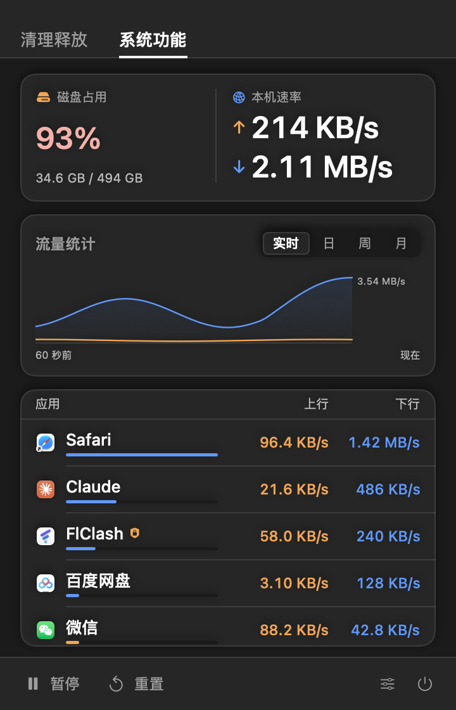
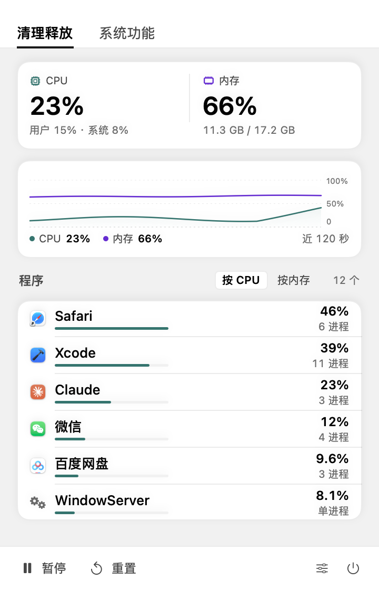

菜单栏三段直出
网络速率、CPU、内存各占一段，合成一项菜单栏空间。三段可独立开关， 点哪段弹哪段详情；数值按深浅色分别校准对比度，模板渲染跟随系统外观。
四档流量统计
图表与应用列表始终一起换档：实时看速率，日 / 周 / 月看平均速率与区间累计。 点一下试试——和 App 里的芯片切换是同一个交互。

每秒增量先落进 5 分钟桶，落盘时后台自动聚合成 30 分钟与 2 小时桶—— 父桶按实际所属区间整体重算覆盖，不会越加越重；过期桶自动清理。 SQLite 单文件，全部留在本机。
为什么好用
网络速率、CPU、内存各占一段，合成一项菜单栏空间。三段可独立开关， 点哪段弹哪段详情；数值按深浅色分别校准对比度，模板渲染跟随系统外观。
「清理释放」看 CPU / 内存占用大户，悬停进程行一键关闭； 「系统功能」看磁盘占用、本机速率与四档流量统计，一个面板不打转。
Chrome 的 Helper 归并成一条 Google Chrome（沿 proc_pidpath 找最外层 .app）；
开 TUN 型 VPN 时总量只认物理网卡去重，隧道内应用列表带盾牌标注。
界面



怎么做的
不引依赖，把系统自带的 nettop 接到伪终端上实时读：
nettop -P -x -L 0 -s 1 -J bytes_in,bytes_out -t external-L N 的采样窗口固定 30 秒，与 N 无关——没法秒级，所以接 pty 自己读；SIGTERM 再补 SIGKILL（实测 nettop 在 pty 下忽略 TERM）；安装
NetScope-macOS-arm64.dmg（永久链接，始终最新版）xattr -dr com.apple.quarantine /Applications/NetScope.app包为临时签名（codesign --sign -），自用没问题；分发给别人请自行签名与公证。Release 附 .sha256 校验文件。
git clone https://github.com/zdx8/NetScope-macOS.git
cd NetScope-macOS
bash Scripts/build_app.sh首次构建约 24 秒，增量 6–7 秒。产物在 dist/NetScope.app；另附 214 项自检与受控负载校准脚本。
已知限制
127.0.0.1 上的通信不显示。utun* 上有 IPv4 地址（macOS 会给每个 utun 都发 fe80::，用 IPv4 才能干净区分）。